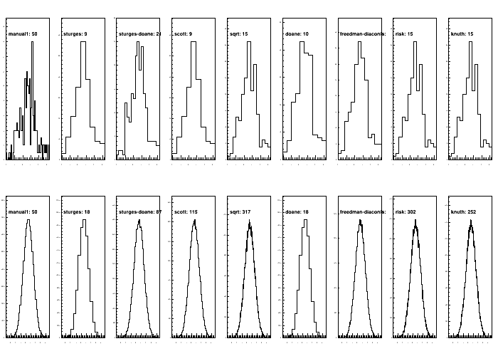

Fill histograms from arrays with automatic binning¶
This example demonstrates how to fill a histogram from an array of data and to automatically choose a binning with various methods.
The automatic binning requires numpy/scipy
Script output:
---------------------------------------------------------
method bins time [s]
---------------------------------------------------------
normal_small
manual1 50 0.11
sturges 9 0.00
sturges-doane 21 0.00
scott 10 0.00
sqrt 15 0.00
doane 9 0.13
freedman-diaconis 13 0.00
risk 15 0.01
knuth 15 0.01
normal
manual1 50 0.06
sturges 18 0.06
sturges-doane 87 0.06
scott 118 0.06
sqrt 317 0.11
doane 19 0.06
freedman-diaconis 153 0.07
risk 318 0.93
knuth 254 0.59
Python source code: plot_autobinning.py
print(__doc__)
from rootpy.plotting import histogram, Canvas
from rootpy.interactive import wait
import time
import ROOT
import numpy as np
ROOT.gStyle.SetOptStat(0)
class Timer(object):
def __enter__(self):
self.__start = time.time()
def __exit__(self, type, value, traceback):
self.__finish = time.time()
def duration_in_seconds(self):
return self.__finish - self.__start
data0 = "normal_small", np.random.normal(0.5, 1, 200)
data1 = "normal", np.random.normal(0.5, 1, 100000)
data2 = "uniform", np.random.random(100000)
data3 = "normal+uniform", np.concatenate((data1[1], 10 * data2[1]))
data4 = "normal+normal", np.concatenate((data1[1], np.random.normal(2.5, 0.1, 100000)))
if ROOT.gROOT.IsBatch():
datas = (data0, data1)
else:
datas = (data0, data1, data2, data3, data4)
recipes = (
"manual1", "sturges", "sturges-doane", "scott", "sqrt",
"doane", "freedman-diaconis", "risk", "knuth")
objs = []
canvas = Canvas()
canvas.Divide(len(recipes), len(datas), 1E-3, 1E-3)
print('-' * 57)
print('\t\t{0:<20s}{1:>10s} {2:<6s}'.format('method', 'bins', 'time [s]'))
print('-' * 57)
for id, (dataname, d) in enumerate(datas):
print(dataname)
for ir, r in enumerate(recipes):
canvas.cd(id * len(recipes) + ir + 1)
timer = Timer()
if r == "manual1":
with timer:
bins, h = histogram(d, 50, np.min(d), np.max(d),
drawstyle='hist')
else:
with timer:
bins, h = histogram(d, binning=r, drawstyle='hist')
print('\t\t{0:<20s}{1:>10d} {2:<6.2f}'.format(
r, h.GetNbinsX(), timer.duration_in_seconds()))
h.Draw()
h.GetYaxis().SetRangeUser(0, h.GetMaximum() * 1.2)
l = ROOT.TLatex(0.15, 0.8, "{0}: {1:d}".format(r, h.GetNbinsX()))
l.SetNDC()
l.SetTextSize(0.1)
l.Draw()
canvas.Update()
wait()
Total running time of the example: 2.45 seconds